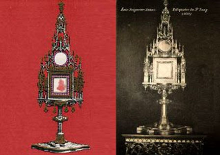

The 1405 Eucharistic miracle in Bois-Seigneur-Isaac, Belgium, occurred when a doubting chaplain witnessed a consecrated Host bleed during Mass. The Blood dripped continuously for four days, staining the corporal. This relic is permanently preserved and remains an active pilgrimage site.
In early 1405, a devout local nobleman, John of Huldenberg, experienced a series of visions in which Jesus appeared to him, instructing him to go to the "Chapel of Isaac". At the same time, the local parish priest, Father Peter Ost, was independently inspired to offer the Mass of the Holy Cross in the same chapel.
On the Tuesday before Pentecost in 1405, during the celebration of the Mass in that chapel, Father Peter Ost was struggling with doubts regarding the Real Presence of Christ in the Eucharist. Upon the "breaking of the bread" during the consecration, he was startled to see the Host begin to bleed. The fresh Blood dripped onto the white altar linen (corporal). This bleeding continued for four days, completely staining the corporal before the Blood coagulated and dried.
The event drew significant attention, leading to an official investigation.
1413: Bishop Peter d'Ailly of Cambrai officially recognized the miracle and authorized the public veneration of the holy relic and its solemn annual processions.
1424: Pope Martin V approved the construction of a monastery at the site to house and protect the miraculous corporal.
The blood-stained corporal is still carefully preserved and displayed for veneration. The monastery that was built in 1424 remains open today as a tranquil site for prayer and pilgrimage.